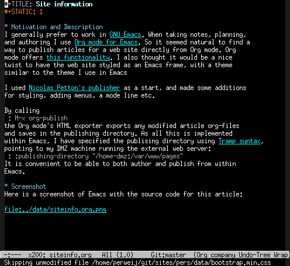

Static web site publishing from org-mode
Changes
- Nov 06 2016: initial version
Motivation and Description
I generally prefer to work in GNU Emacs. When taking notes, planning, and authoring I use Org mode for Emacs. So it seems natural to author and publish articles for a web site like this directly from within Org mode. Of course, Org mode offers this functionality.
I also thought it would be a both nice and useful twist to have the web site styled as an Emacs frame, with a theme similar to the theme I use in Emacs (this web site features an navigation bar resembling Emacs menu-bar-mode - a mode I have disabled in Emacs, so it is not really similar). Nice, because minimalism can look good, and useful because a uniform look reduces the cognitive stress on my brain when I move my gaze from Emacs to the web browser.
I used Nicolas Petton's publisher as a start, and did some work to learn Emacs Lisp and to create the fancy Emacs look.
By calling
M-x org-publish
the Org mode's HTML exporter exports any modified article org-files and saves in the publishing directory.
As everything is implemented within Emacs, I can make use of other powerful Emacs packages for even more convenience. I have specified the publishing directory using Tramp syntax, pointing to my DMZ machine running an external web server:
:publishing-directory "/home-dmz:/var/www"
It is convenient to be able to both author and publish from within Emacs.
Screenshot
Here is a screenshot of Emacs with the source code for this article (not fully up to date though):

Todo
- Emacs keystrokes - I might add one or two for fun.
- RSS feed.
- Tags - markup articles with topic tags and present in some sensible way.
- Make the source code available.